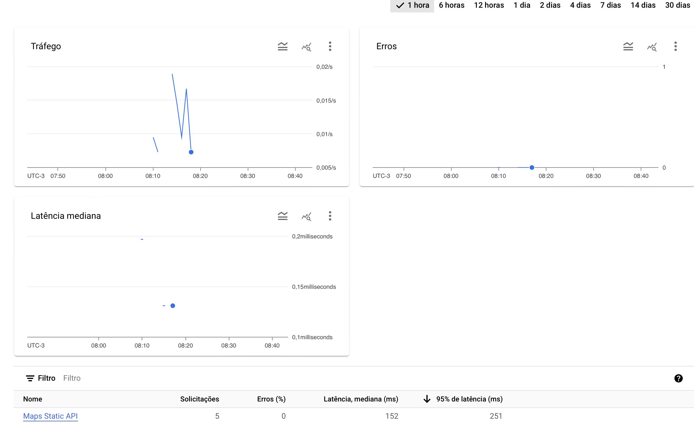
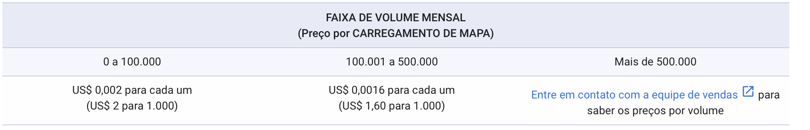

Google Maps
Google Maps Api
Custos
A plataforma do google maps permite o teste gratuito de até 90 dias, ou quando a conta acumular US$ 300 em cobrancas. Além disso, é depositado recorrentemente US$ 200 como crédito.
Funcionalidades adicionais
O Google Maps fornece uma série de funcionalidades adicionais que se adequam a contextos específicos, como por exemplo:
-
Desenhar polígonos, retângulos, polilinhas, círculos, marcadores e janelas de informações (pop-ups) em um mapa. (SDK do Maps para Android e SDK do Maps para iOS).
-
Codifique uma sequência de coordenadas de latitude/longitude (LatLngs) em uma string de caminho codificada e decodifique uma string de caminho codificada para uma sequência de LatLngs. (Utilitário de polilinha).
-
Mostre uma imagem fixa de um mapa e, se quiser, adicione marcadores, polígonos, retângulos, polilinhas, círculos e estilos personalizados. Isso é útil, por exemplo, quando você não precisa de um mapa interativo e quer otimizar a performance e o tamanho. ( API Maps Static).
Desempenho
O serviço possui um dashboard onde podemos verificar as solicitacoes em praticamente tempo real, onde podemos observar alguns ponto de interesse como:
-
Latência mediana: Tempo que leva para uma solicitação ser enviada de um cliente (por exemplo, um navegador ou aplicativo) para o servidor da API e, em seguida, para a resposta ser enviada de volta para o cliente. A mediana desse valor é o tempo que está localizado no meio, onde todos os dados estão ordenados.
-
Tráfego: Representa o volume de solicitações que uma API recebe e processa em um determinado período de tempo.
-
Erros: Representa as falhas que ocorrem quando uma solicitação à API não é processada com sucesso. Geralmente são erros de cliente (4xx) e erros de servidor (5xx).
-
Solicitações: Quantas requisições foram feitas para a API.
-
95% de latência (ms): Representa que 95% das solicitações são atendidas em um tempo igual ou menor do que esse valor.
.
Confiabilidade
Nos termos de SLA, o Google garante que os serviços cobertos estarão disponíveis 99,9% do tempo a cada mês. Ele define isso como um Objetivo de Nível de Serviço (SLO) que pretende alcançar todos os meses.
Além disso, fornece crédito caso o serviço fique indisponível por um período de tempo acima do definido no SLA. Para isso, é preciso realizar uma solicitação de crédito.
o Termo Pode ser visualizado através desse Link
Seguranca
A Google utiliza o sistema de APIKEY para lidar com o consumo. Podemos limitar a chave para o consumo de aplicativos específicos, como para Android, utilizando a assinatura SHA-1. Além disso, há orientações detalhadas para esse uso.
Podemos visualizar praticas de segurança através desse Link
Documentacao e Suporte
O Google oferece uma ampla variedade de documentação clara e compreensível, juntamente com exemplos práticos. Além disso, proporciona suporte técnico aos seus clientes.
Feedbacks
Temos uma série de avaliações de empresas que utilizam os serviços do Maps, como 99 e inDriver.
Podemos visualizar as avaliações dos clientes através do Link
API Maps Static
A API Maps Static do Google permite criar mapas estáticos para serem utilizados como imagem.
Recursos
- Podemos adicionar multiplos marcadores e personalizá-los.
- Podemos definir caminhos e destacar rotas ou areas especificas.
- Possui uma gama de elementos para estilizar o mapa, como adicionar e remover pontos de interesse, alterar cores, etc.
Portabilidade
Como estamos lidando com mapas estáticos, o consumo de uma API pode ser realizado por diversas fontes, independentemente do sistema operacional.
Integracao com flutter
Por ser basicamente uma imagem, existe uma enorme facilidade para configurar a requisição no Flutter. Como no exemplo abaixo, onde utilizamos um simples exemplo de consumo dessa API, definindo a localização no mapa, a quantidade de zoom desejada, o tamanho da imagem, o tipo de mapa e alguns marcadores.
import 'package:flutter/material.dart';
class StaticMapExample extends StatelessWidget {
const StaticMapExample({super.key});
@override
Widget build(BuildContext context) {
String mapUrl =
'https://maps.googleapis.com/maps/api/staticmap?center=40.712776,-74.005974&zoom=15&size=600x300&maptype=roadmap'
'&markers=color:red|label:A|40.713776,-74.005974'
'&markers=color:green|label:B|40.712776,-74.004974'
'&markers=color:blue|label:C|40.711776,-74.005974'
'&style=feature:poi|visibility:off'
'&key=$apiKey';
return Scaffold(
appBar: AppBar(
title: const Text('Static Map Example'),
),
body: Center(
child: Image.network(mapUrl),
),
);
}
}
void main() => runApp(const MaterialApp(home: StaticMapExample()));
Escalabilidade
O Google Cloud, que hospeda a API do Google Maps, é projetado para escalar automaticamente conforme a demanda. Isso significa que ele pode aumentar a capacidade para lidar com picos de tráfego sem comprometer o desempenho.
Limite de uso
Máximo de consultas por minuto: 30.000 QPM.
Solicitações de até 25.000 por dia exigem uma chave de API.
Solicitações acima de 25.000 por dia exigem uma chave de API e uma assinatura digital.
Vantagens e Desvantagens
- O tamanho da imagem é limitado a no máximo 640 x 640 pixels.
- Por utilizar uma imagem, podemos facilmente armazenar essa imagem no dispositivo no Flutter, limitando as solicitações apenas quando for necessário atualizar.
- Possui um período gratuito de uso para testes.
- Possui um sistema de pagamentos um pouco complexo; caso não fique de olho, você pode começar a pagar mais do que espera.
- Não é interativo, ou seja, se o usuário clicar em cima do mapa, nada acontecerá.
Custo (Maps Static)
O custo inicial é gratuito. O Google oferece um nível gratuito com um número específico de solicitações gratuitas por mês, juntamente com 200 dólares em crédito para a maioria das APIs do Google Maps Platform.
Após o período de custo inicial, a cada 1.000 solicitações mensais o custo é de 2 dólares.
Quando passam de 100.000 solicitações mensais, o custo é de 1,60 dólares por 1.000 solicitações.

Referências extras
Google Maps Api - Maps SDK para Flutter
Fornece suporte à base de dados de mapas diretamente para aplicativos iOS ou Android.
Recursos
Conta com uma ampla gama de recursos:
- Marcadores avançados
- Estilos de mapa
- Formas
- Pontos de Referencia
- Rotas
- Zoom
E entre outros (Basicamente o aplicativo Maps com recursos customizados).
Integracao com flutter
Por ser um plugin, inicialmente é preciso configurar o plugin para as plataformas, ou seja, são necessárias configurações adicionais com códigos nativos de cada plataforma para que esse recurso funcione.
Embora essa integração seja mais complexa, ela abre uma gama de novas funcionalidades, como por exemplo: Adicionar um evento específico ao clicar em um marcador no mapa. No entanto, para isso será preciso adicionar configurações adicionais de cada plataforma e realizar a configuração necessária no Flutter.
Um exemplo de como utilizar o o maps sdk no flutter pode ser visualizado através do Link
Limite de uso
O uso é ilimitado, porém podemos definir limite de cotas para restringir as solicitações
Vantagens e Desvantagens
- Maior Flexibilidade de Recursos e flexibilidade.
- Mapas dinâmicos, permitindo que o usuário interaja de forma mais livre.
- Sistema de pagamento um pouco estranho; recursos podem ser pagos se personalizarmos o mapa.
- Possui um período gratuito de uso para testes.
- Maior tempo de desenvolvimento por ser um plugin e não simplesmente uma requisição.
Custo (Maps SDK)
O custo inicial é gratuito. O Google oferece um nível gratuito com um número específico de solicitações gratuitas por mês, com 200 dólares em crédito para a maioria das APIs do Google Maps Platform.
Após o período de custo inicial, a cada 1000 solicitações mensais, o custo é 7 dólares para mapas carregados com ID do mapa.
Quando passam de 100.000 solicitações mensais, ele passa a cobrar 5,60 dólares por 1000 solicitações.
Para mapas que não foram carregados com ID do mapa, o custo é de 0 dólares, independentemente da quantidade de solicitações por mês.
ID do mapa
É um identificador que permite carregar mapas personalizados com estilos específicos, definido no Google Cloud Console.
Utilizar o recurso sem um Map ID permite criar um mapa padrão do Google Maps, com a aparência e os estilos padrão fornecidos pelo Google.
Com o Map ID, é possível personalizar o mapa para que tenha uma aparência consistente, permitindo trazer algo mais voltado para seu aplicativo.